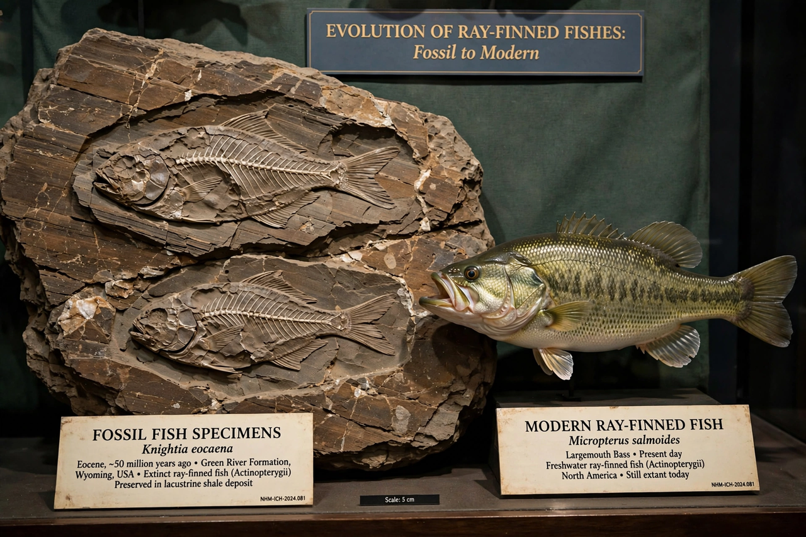

Evolution of fish

| Evolution of fish | |
|---|---|
| First appearance | Early Cambrian, ~518 million years ago |
| Key groups | Agnathans, placoderms, chondrichthyans, osteichthyans |
| Living species | More than 34,000 described |
Fish are the oldest vertebrates and the ancestors of all tetrapods, including humans. The evolution of fish spans over 500 million years, from small jawless swimmers of the Cambrian seas to the more than 34,000 living species that dominate aquatic ecosystems today.
Jawless beginnings
The earliest fish, such as Haikouichthys and Myllokunmingia from the ~518-million-year-old Chengjiang deposits of China, were small, jawless animals that fed by filtering or sucking. Their jawless descendants, the ostracoderms, acquired bony head shields in the Ordovician and Silurian. Only two groups of jawless fish survive: the hagfish and lampreys.
The age of armour and jaws
Jaws evolved from the front gill arches of jawless ancestors, and jawed fish (gnathostomes) split into several lineages. The heavily armoured placoderms dominated Devonian seas, some, like Dunkleosteus, reaching 6 metres or more. The acanthodians, or "spiny sharks", flourished alongside them before both groups vanished by the end of the Devonian extinctions.
Cartilaginous and bony fish
Two great lineages survived. The cartilaginous fishes — sharks, rays and chimaeras — reduced their skeletons to cartilage and became enduring marine predators. The bony fishes divided into the ray-finned Actinopterygii, which radiated into the overwhelming majority of modern fish (culminating in the teleosts), and the lobe-finned Sarcopterygii, represented today by coelacanths and lungfish — and by their descendants, the tetrapods, whose fins became limbs in the late Devonian, exemplified by transitional fossils such as Tiktaalik.
Later radiations
Fish survived all five major mass extinctions. After the end-Permian crisis they re-diversified; bony fish largely replaced earlier groups in the Mesozoic, and teleosts underwent a major radiation in the Cretaceous and Cenozoic to become the most species-rich group of vertebrates.
See also: Timeline of fish evolution · Devonian · Lungfish · Coelacanth